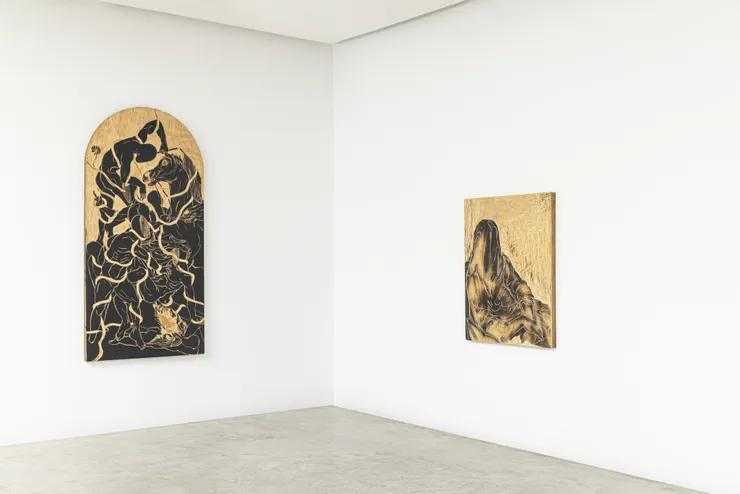

Assoukrou Aké est un artiste pluridisciplinaire, qui explore librement différentes formes plastiques allant de l’installation à la sculpture, en passant par la gravure et les œuvres textiles, pour élaborer ce qu’il nomme ‘un récit de guérison’.
En confrontant son histoire personnelle à ‘la grande histoire’, Assoukrou s’intéresse à ce qui les lie, en tentant de porter un regard à la fois empathique et distancié sur les parts d’ombre de l’histoire collective, afin de dépasser les singularités de chacun pour atteindre un espace critique métissé où les fragments des vies individuelles pourraient faire sens à nouveau et créer de nouvelles solidarités.
L’univers d’Assoukrou Aké est composé de références multiples, entremêlant mythologie africaine et iconographie du siècle des Lumières, allégories sacrées, littérature européenne classique, rites profanes et photographie de presse. On retrouve ainsi à plusieurs reprises la figure humaine anonyme au visage fait de spirales, qui évoquent tant un personnage fictionnel que la matérialisation symbolique d’une généalogie, à la manière des cernes des arbres. Le cheval également est très présent dans les œuvres d’Assoukrou, notamment ses gravures. Il incarne souvent une dimension tragique, instaure une atmosphère de grandeur et évoque les épopées, les grandes aventures, les conquêtes – ou leur échec.
Par la répétition plastique de formes traditionnelles ou classiques et la subversion des contextes et des hiérarchies de matière, Assoukrou Aké compose finalement un art de la traduction, de la transposition, afin de pouvoir se confronter aux mutations de la violence et inventer un nouveau langage commun, découvreur du monde et des réponses qui lui sont intrinsèques.
Expositions à la galerie

Abidjan